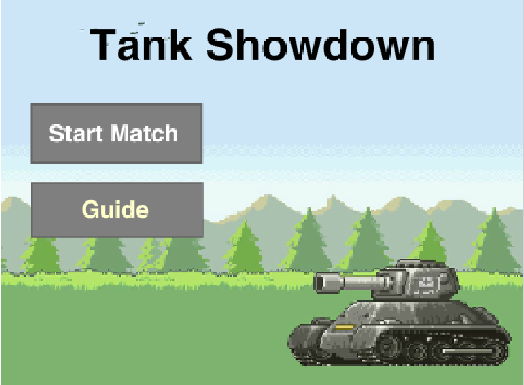

Tank Showdown
Click here to see my DEV.AI project


Description
Play Tank Showdown Here!This is my very first Scratch Game that I made as a project! The scoring system that I used is based on a damage indicator. The first person wins. I added an element of random number generators via the crate that respawns randomly throughout the game. As the game is played, the players recieve more access to the crate and thus it becomes increasingly harder to avoid being hit from fast bullets.
Reflection
I created this type of game using inspiration from an Ipad game I used to play. I decided to make my own version of the game with new improvements according to my likings. I encountered many successes during the making of my game. Two included the code for moving the sprites and the discovery of how to use the random blocks. Along with success, there came a few obstacles. Obstacles I faced while programming the game were trouble with bullet cloning and sprite interactions. To overcome these obstacles, I conducted reseach and recieved knowledge on how to use the cloning and broadcast blocks. I am quite glad with the result of my game, but if I had more time to work I would have added more powerups.

Above is my move algorithm that is crucial for controlling the movement of the tanks. This is an algorithm because it is constantly performing loops that checks if the control keys are pressed. If one of the control keys are pressed, then it will turn or move 3 steps depending on the key. If the sprite runs into a wall, then it will be set back 3 steps. At the end of the algorithm is a custom block that checks if the player has ammo. If the player has ammo, power will be set to 1 and the player's next shot will be a fast rocket.